| About Us | Special Thanks | Site Map |
|||||||||
| About Us | Special Thanks | Site Map |
|||||||||
| 午前３：５０頃、タヒチ・FAAA空港に到着。 ここで、ボラボラ島への国内線（エアータヒチ）へ乗り換えとなります。 さすがに夜中なので、周りは真っ暗で空港も閑散としています。 飛行機から降りたら徒歩で、空港の建物に入ります。 |
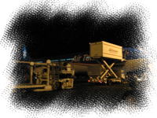 エアタヒチヌイ ジャンボジェット |
|
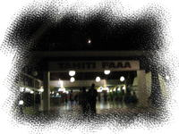 FAAA空港到着口 |
私たちは飛行機との記念撮影もそこそこに、早足で入り口へと向かいました。 さっさと入国手続きを済ませて、早めに両替をするのと、 ボラボラ行きの飛行機（自由席）でよい席をゲットするためです。 ※空港での流れや注意点は、Inrfomation に記載しています。 |
| 入り口では、３人のタヒチアンのおじさんが、歌とウクレレ演奏でお出迎えです。 「ようこそタヒチへ」という日本語の看板もありました。 おお～、タヒチアンミュージックの生演奏だぁぁ。 でもこんな時間に、おつかれさまです。。 入国手続きを終えて、手荷物受け取り所で荷物を受け取り外へ出ると、現地旅行会社（タヒチヌイトラベル）の方が待っていました。 「タヒチヌイトラベル」の方（日本人です）は、赤い制服を着ているのですぐにわかりました。 現地旅行会社は３～４社くらいで、それぞれ制服の色で見分けるとよいらしいです。 日本で申し込んだ旅行会社にかかわらず、タヒチではこの現地旅行会社にお世話になるので、会社名は憶えておきましょう。 |
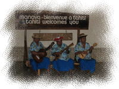 タヒチアンおじさん３人組 |
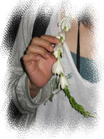 ティアレのレイ |
係の方に名前を告げると、 「ようこそタヒチへ」と、ティアレタヒチのレイを首にかけてくれました。そして、 このあと国内線チケットの受け渡しや説明をするので５時に集合してください、とのこと。 さて、まずは両替。というわけで、両替所に行き並びます。 さすがに急いで出たので、まだそれほど混んでおらず、集合時間前に余裕をもって両替を済ますことができました。 私たちは、島でのアクティビティの支払いをパシフィックフランでするので、多めに両替しました。 |
空いた時間に、せっかくだから空港内で記念撮影、なぞしてみるものの、 ふたりともかなりおつかれです・・・(ノ;_ _)ノ|｜ 飛行機でほとんど眠れなかったので・・。 ひでくんは、写真撮影よりも早く休みたそうです。 私も、目の下のクマがひどい。。 というわけで、ここでの写真はどれもイマイチでした。 |
| 集合時間の５時になり、チケット類の配布と説明がありました。 国内線チェックイン手続きの後、また再集合になるようです。 早い者順に手続きして国内線ゲートに並べると思っていたので、 なんだか予想と違う流れに、不安が募ります。。 |
| チェックインのあと、再集合して受け取ったチケットや， ボラボラ島に到着してからの流れについて説明を受けます。 私たちは、３日目にホテルを移動するので、 （ホテルボラボラ２泊 → インターコンチネンタル モアナリゾート３泊） みんなが解散した後も居残りで（？）説明がありました。 |
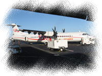 このプロペラ機で・・・ |
出遅れたので、急いで国内線の出発待合室に向かいます。 （ティアレのレイは持ち込めないので、手荷物検査のときに没収されてしまいます。） 待合室に入ってみると、３つのゲートがあり、ボラボラ島行きのゲートがどこになるのかまだ表示が出ていません。 先に待合室に入っている人たちも、ゲートに並んではいません。 搭乗手続きは出発１０分前からなのですが、どうもそれまでこんな状態っぽい・・。 「左側席に座らなきゃ」と気合を入れてうろうろしている新婚さん（特に奥さんの方）もいて、 （周りでもそんな会話がちらほら・・みんな情報チェックしてるんだね・・） この分だと搭乗手続きが始まったとたんに、人がゲートに押し寄せることになりそうな気が・・。 |
| そのうちに、私たちの前にいたおばさんグループが、空港の係員と何やら話をして、 左側のゲート前に移動し始めました。 ん？これはきっと、ボラボラ行きのゲートを確認したに違いないっ！ そう確信した私たちは、おばさんグループの近くに移動しました。 すると・・・、大当たり～！！ 搭乗手続き開始のモニター表示・アナウンスがあると、思ったとおり人が押し寄せましたが、私たちは、４組目くらいに並ぶことができ、無事、左側の一番前の席をゲットしました。 |
| 夜もすっかり明け、青空が広がっています。 もう日差しが強い～。さすが南の島。 ここから、約一時間のフライトです。 |
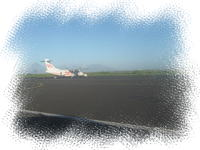 青空 |
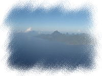 モーレア島(?) |
飛び立つとすぐに、島が見えてきました。 大きな山が浮かんでいるようなこの島は、モーレア島のようです。 それからしばらくして、またいくつか島が見えてきます。 これかな？？いや、まだだよー、、 なんてふたりで話しながら、期待でだんだんワクワクしてきました。 ひでくんは、窓に張り付きで写真撮りまくりです。 （国内線は、カメラ係のひでくんが窓側席） |
| そしてついについに、、 ボラボラ島が見えてきました～～！！！！ モツと珊瑚礁に囲まれた島。 モツからのびる水上バンガロー。 そして真ん中にそびえるオテマヌ山。 ほんものだあ～～！ほんとに来ちゃったよ～～！！ もう、上から見ただけで感激です。。 島の上を旋回して、飛行機は無事、ボラボラ空港に着陸しました。 |
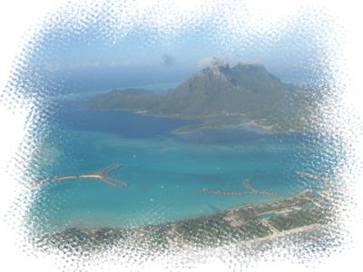 憧れのボラボラ島！！！！！ |
| 飛行機から降りると、ここも徒歩で、空港入り口に向かいます。 よいお天気で、空は青空、海の色がとってもきれい！！ ふたりとも興奮して、周りを見渡したり写真を撮ったり。 |
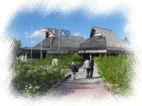 空港の到着口 |
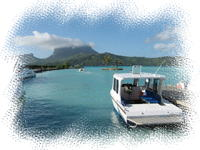 空港前の船着場 |
空港に入り、荷物を受け取ろうと奥に進むと、おじさんに声をかけられました。 このおじさんが、ホテルボラボラの人みたいです。 受取所のラックに並べられたスーツケースを受け取ると、おじさんがタグをつけて運んでくれます。 現地旅行会社の係員さん（赤い服の人）が来て、「この船に乗ってホテルに移動してください」と指示がありました。 そして、「宿泊するバンガローはいいお部屋みたいですよ」とのこと・・。 そういえば、お部屋のリクエストするのすっかり忘れてた。 （どの部屋がいいのか、調べる余裕もなかったし・・） わ～～い♪どんなお部屋なんだろう・・。 |
| ホテルボラボラのクルーザーに乗り込むと、 私たちの後に、日本人カップルがもう一組、続けて乗り込みました。 こちらは、新婚さんのようです。 |
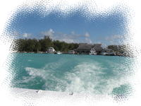 ホテルに向けてクルージング |
さて、いよいよホテルに向けて出港です。 青い海のグラデーション。左手にはオテマヌ山。 右手には、パールビーチリゾートの水上バンガロー。 写真集に載っているようなきれいな景色がどんどん流れていきます。 なんだか夢みたいです。 |
| ふと向かいのカップルを見ると、ダンナさまが奥さまの肩を抱いて とてもラブラブな雰囲気でした。 それにひきかえウチは・・、 ダンナはまわりの景色に夢中で、妻のことなど眼中にない様子。 ちょっと悲しい・・・(Ｔ-Ｔ) |
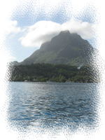 オテマヌ山 |
| 少したつと、運転手のおじさんに手招きされ、 クルーザーの運転席に乗せてもらいました。 ひでくんがハンドルをにぎったところで、カメラをパチリ。 素人にハンドル任せていいのかなあ、と心配したけれど、 しばらくまっすぐ進むだけなので大丈夫みたいです。 もう一組の新婚さんは、しばらく運転させてもらっていました。 ２０分ほどで、ホテルボラボラが見えてきました。 ラグーン半周のクルーズが終わり、ホテルの船着場に到着です。 |
| 船着場に降りると、日本人スタッフのマミさんが出迎えてくれました。 ここで冷たいおしぼりとシャンパンをいただきます。 マミさんが海にパンを投げ入れると、桟橋に魚がたくさん寄ってきます。 夜は、マンタも見れるそうです。楽しみ～ ((o(゜▽゜)o)) ワクワク。 |
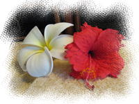 ホテル案内の上におかれたお花 |
私たちのお部屋はまだ準備ができていないので、 それまで過ごすデイユースのお部屋を用意しているとのこと。 マミさんに案内され、デイユースのお部屋に向かいました。 レセプションの棟の近くにある、４番のコテージです。 ビーチからは離れていますが、こちらも素敵なお部屋です。 テーブルとバスルームにはハイビスカスなどのお花が飾られていました。 ここでチェックインのための書類を記入します。 |
| 水上バンガローに移動できるのは１３時くらい、とのことなので、 それまで、少し仮眠をとることにしました。 何しろ、成田のホテルで仮眠をとってからほぼ丸１日、ほとんど寝ていません。 夜まで起きている自信はないし、 このまま海に入るのも危険なコンディションです。 シャワーを浴びて、ふかふかのベッドに横になると あっという間に眠りに落ちてしまいました。。(∪。∪)。。。zzzZZ |
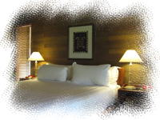 ４番コテージのベット |
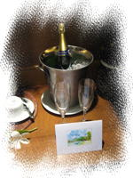 シャンパンとメッセージカード |
１２時くらいまで爆睡すると、だいぶ元気になりました！ 部屋移動までまだ時間があるので、レセプションの棟や売店などを散策しました。 １３時になり、部屋で待機していましたが、 １５分ほど経っても、まだ連絡がありません。。 少し遅れてるのかな？と思いましたが、待ちきれずレセプションへ催促に行くと、 すぐ、お部屋へ案内してくれました。 |
| 私たちが２日間過ごすお部屋は、１２０番「MANINI」です ここは、”旧プレミアムバンガロー”ではないですかあ～！！ 大きな天蓋付きベッド、テラスの向こうに広がる海。 テーブルにはウェルカムフルーツとシャンパンがありました。 さっきのお部屋もよかったけど、こちらはもっと素敵！！ まずは、ベッドで記念撮影♪ |
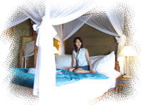 天蓋付ベット |
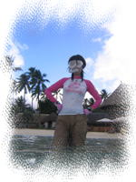 完全装備!! |
お部屋をひととおり見て回った後、早速着替えてビーチに行ってみることにしました。 午後から空はだんだん曇ってきてしまったのですが・・。 （お昼寝は午後からにすればよかったかな～、と後悔・・） この旅のために購入した、自前のシュノーケルセットを装着して、 ボラボラ初シュノーケリングです。 まだ足が付く浅いところでも、お魚がいます。 海がきれいなので、底まで透けて見えます。 |
| 泳ぎ始めて少しすると、ぽつぽつ雨が降ってきた・・ かと思ったら、すぐどしゃぶりになってしまいました。・・これがスコール？？ とりあえずパラソルに避難してしばし休憩。 泳ぎ始めたばかりだし、すぐやまないかな～、と祈っていると、 幸い雨雲が流れ、雨がやみました。 お魚が多いサンゴの周りをぷかぷか浮きながら、 １時間ほどシュノーケリングを楽しみました。 |
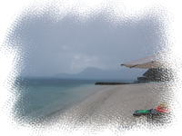 雨のビーチ |
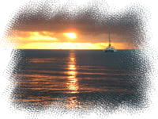 初めてのボラボラの夕日 |
部屋に戻り、シャワーを浴びたり身支度するともう６時前です。 テラスから、太陽が沈んでいきます。 ボラボラ島での初夕陽です。 雲が厚くてベストショットとはいきませんでしたが。 |
| お昼ごはんをちゃんと食べていないので、さすがにおなかがすいてきました。 夜はホテルのレストランで食べることに決めていたのですが、 まだ予約はしていませんでした。 早く予約をとらなきゃ、、でもなんていったらいいんだろう～、 と私があわてていると、ひでくんがレセプションに聞きに行ってくれました。 ホテルのレストランなら、予約はしなくても大丈夫みたい。 |
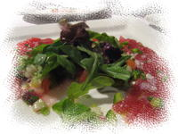 魚のカルパッチョ(食べかけ） |
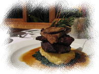 ビーフステーキ フォアグラのせ |
ディナーにはきちんとした格好でいくものらしいので、 私はワンピース、ひでくんはシャツにチノパン姿で、ホテルのレストランに入ります。 ボラボラ初ディナーは、 「魚のカルパッチョ」「ビーフステーキ フォアグラのせ」をオーダー。 （メニュー控えてないので名前怪しいですが・・） 量が多いとは聞いていましたが、ほんとにダイナミックでした。 ポリネシアン料理ってこういうかんじなのかな？ 二皿をふたりでシェアして、もうおなかいっぱい。 食後にデザートのメニューをもらったけど、とても入りそうもなくて断念しました。 明日もあるし、と思ったのだけど、結局次の日はレストラン行かなかったので、 ここでのデザートは食べずじまい。 無理して食べておけばよかったかな～。。 |
| レストランを出ると、部屋に戻る前に船着場へ向かいます。 目的は、そう、マンタ♪ です。 毎日見られるわけではないようなので、ドキドキです。 マンタきてるといいな～、と思って近づくと・・・、 いました！！マンタ～☆ |
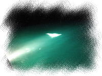 ライトに照らされるマンタ |
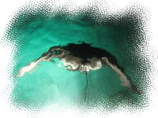 優雅に泳ぐマンタ |
桟橋の下のライトの下で、優雅にくるくると回ります。 頭からでんぐり返りするみたいに回るんです。なんでだろう、不思議～。 そして、隣のライトまで泳ぎ、そこでまたくるくる・・。 私たちは、しばらくマンタの姿に見惚れていました。 |
| 部屋に戻って、ウエルカムシャンパンを開けることにしました。 ウエルカムフルーツのパイナップルをテラスのテーブルにセッティングして、 シャンパンで、乾杯！ 空には満天の星。テラスの下にはライトに照らされたお魚が泳いでいます。 長かった一日を振り返りながら、しみじみ。。 「これてほんとによかったね。。」「うん・・」 |
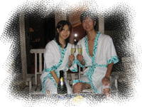 ボラボラに乾杯 |
<< Previous ( Travelogue ) << ｜ top ( 1stDay ) ｜ >> Next Day ( 2ndDay ) >> |